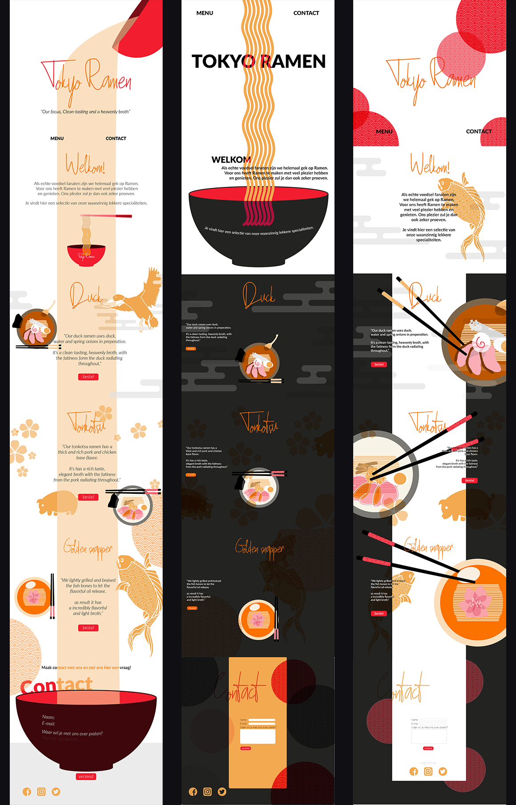
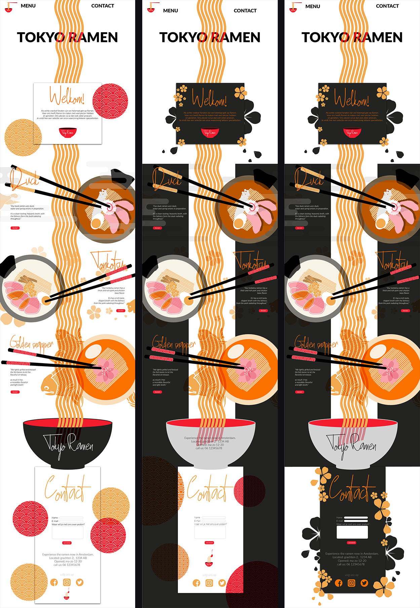

Vormgeving: Favoriete eten | Tokyo Ramen
Tokyo Ramen
Single page website
Ramen, afgelopen 5 jaar ben ik viermaal in Japan geweest. Waarom ik zo vaak naar Japan ben geweest is voornamelijk voor het eten. Japans eten staat bekend als elegant, licht, vers en zoet eten. Bij elk wederkomst fascineert het mij telkens weer. Ramen is mijn go-to meal. JE kan ramen bijna voor elk maaltijd eten, het wordt voornameljk gegeten in de middag/avond en als late-night snack. Mijn doels is om de jongeren te inspireren om Japanse Ramen te eten. Tevens is er een groot divers aanbod aan Ramen!
Aanleiding project
Voor het vak vormgeving heb ik layering en overprinting gekregen. Layering en Overprinting, het effect van, overlappende kleuren die samen een nieuwe kleur vormen over bepaalde elementen.
Voor wie is het?
Jongeren, de jongeren van tegenwoordig staat meer open voor nieuwe ervaringen.
Sfeer
De sfeer die ik wilde toepassen: Elegantie, frisheid, puurheid en eerlijkheid.
Onderzoeksfase | Mindmapping, moodboards, collage en schetsen
Voordat ik ramen had gekozen als favoriete eten ging het eerst door een selectie van al mijn favoriete eten en wat er bij kwam kijken. Een mindmap is hiervoor super handig, zo kan ik mijn gedachte van al mijn favoriete eten in kwijt.
Daarna heb ik inspiratie en onderzoek gedaan naar de layering en overprinting stijl, ramen en een single page website.
Vervolgens heb ik 3 kernwoorden bedacht wat ik belangrijk vind bij ramen en dat is: Kalmte, hete noodles en concentratie.
Aan de hand van de collage heb ik schetsen gemaakt. Van de elementen die zich in de collage bevinden.
Experimenteren | kleurenpalet, food vector, food icoontjes en typography
De kleurenpalet komt uit de kleuren van het collage. En de kleuren die ik heb gekozen zijn de kleuren rood en geel. Door de stijl heen mag ik de kleuren rood en geel gebruiken met de bijbehorende contrasten.
Vervolgens heb ik veel schetsen gemaakt van de verschillende soorten ramen die er bestaan. Ik heb gekozen van een perspectief van boven af omdat het overzichtelijk is. Er is ook geëxperimenteerd met ingrediënten, verschillende soorten keramiek kommen en toppings alle schetsen met betrekking tot ramen.
Vectoriseren met Adobe illustrator, hieronder zie je hoe ik de ramen heb getekent met adobe illustrator en geëxperimenteerd heb met de layering en overprinting stijl.
Aan de hand van de collage heb ik schetsen gemaakt. Van de elementen die zich in de collage bevinden.
De eerste versie
Eerste versie
De eerste drie ontwerpen, ze zijn alle drie verschillend. Symmetrie en dynamiek speelde de hoofdrol in mijn design van vloeiende soep naar de eetstokjes die je zigzaggend met je ogen volgt. Daarnaast heb ik ook gedacht aan het contrast. Veel elementen van de collage zie je erin terug.
De tweede versie
De tweede versie
Met de feedback die ik had ontvangen ben ik tot dit resultaat gekomen. De drie designs zijn meer identiek aan elkaar, met de noodles die door de hele website geef ik aan dat de gebruikers door kunnen scrollen. De stokjes zorgen ervoor dat de gebruiker vanuit de titel naar het product kijkt. Hierdoor volgt de gebruiker een lijn en krijgt gelijk een impressie van het product.
Layering en overprinting | Titel & vectors
Tijdens het ontwerpen zat ik te denken aan een nieuwe titel voor de homepagina. Een meer speelser titel met de stijl er beter in verwerkt.
Dit zijn alle vectors die zijn gemaakt en worden gebruikt.
Pecha kucha | Overprinting en layering
Om beter te begrijpen wat mijn stijl inhoud heb ik een pecha kucha gemaakt voor mijn aangewezen stijl: Overprinting en layering.

De derde versie
Bekijk de derde versie{kind=link}
De derde versie
Om de overprinting en layering stijl er beter te laten uit komen heb ik ervoor gekozen om de kleuren een lichtere toon te geven. Zodat de focus meer naar het eten kan gaan dan naar het structuur van de website.
Website | bestelknop
Hieronder zie je de schetsen van bestelknoppen. Het varieert van simpele knoppen tot knoppen vol met detail.
De final versie
De meest kenmerkende vormen in mijn vormgeving zijn:
- Vierkanten, die heb ik gebruikt voor tekstvlakken.
- Cirkels, Onderin bij contact staan er cirkels met een japanse patroon. Het staat er voor sfeer en elegantie.
- Japanse kersenbloesem, Ze staan voor de elenatie en sfeer van de website.
- Noedels, De noedels gaan door tot de laatste gedeelte van de website. Ze zorgen voor de japanse sfeer.
- De gouden karper, De gouden karper vind ik heel kenmerkend en opvallend op deze pagina omdat het echt eruit springt. De karper zorgt voor esthetisch gevoel, het draagt bij aan de japanse sfeer.
Typografie
Lettertype: Lato, dit lettertype vind ik persoonlijk heel simpel, zorgt voor dat het makkelijk leesbaar is. Op de homepagina heb ik met Lato (heavy) een typografische kunstwerk gemaakt met de japanse geschrift en het alfabetische geschrift in mijn aangewezen stijl.
Compositie Layout
De compositie en de layout, de noedels zorgen voor een leidraad van de pagina, die staan gecentreerd, in het begin ervaar je een gevoel van symmetrie. Naarmate je bij de producten bent, komt er veel asymmetrie in beeld. De stokjes zorgen voor een asymmetrisch gevoel waardoor je van de titel naar het product wordt geleid. Na de producten eindigt het met een symmetrisch gevoel bij contact. Het begint en eindigt met rust.
Gestalt wetten | de wet van eenvoud
De wet van eenvoud komt voornamelijk terug in het eten. Met zo min mogelijk details zijn de producten te herkennen en te onderscheiden. Ik heb expres gezondigd met de japanse kersenbloesem bij welkom, omdat ik bij de homepagina de gebruiker verder naar beneden wilde laten scrollen/ geïnteresseerd maken. De fonts zijn goed te onderscheiden en zijn alleen gebruikt als ze nodig waren. Het ontwerp heeft een jong en fris gevoel ik vind dat het goed past bij mijn doelgroep.
Gestalt wetten | de wet van voorgrond en achtergrond
Omdat ik overprinting en layering heb is het lastig om de voorgrond en achtergrond te onderscheiden omdat ze met elkaar samenvoegen. Maar doordat ik de noedels als leidraad heb gebruikt is het duidelijk waar je als gebruiker naar toe moet. De bestelknop is felrood het valt op naast de andere elementen.
Gestalt wetten | de wet van nabijheid
De tekstvlakken hebben een eigen "papieren kader" ze zijn geïsoleerd in hun eigen omgeving, waardoor ze niet samenvoegen met de achtergrond, tevens hebben ze genoeg witruimte om te ademen. Elk Ramen kom heeft een paar stokjes die naar de kom wijzen. Dit zorgt voor verduidelijking in het asymmerisch beeld, hierdoor zie je goed onderscheid tussen de chaotische achtergrond en de informatieve voorgrond.
{kind=link}
Reflectie
Een goed ontwerp bevat veel iteraties, ik heb geleerd dat het oke is om fouten te maken. Tijdens het ontwerpen vond ik het handig als je iemand hebt die altijd comentaar kan geven op je ontwerp. Doordat ik het onwerp de heletijd zie is het handig om een mening te horen van iemand die het niet de heletijd zie. Hoe meer meningen hoe meer inzichten ik ontdek. Hierdoor had ik continue meer inspiratie en liep ik niet vast.